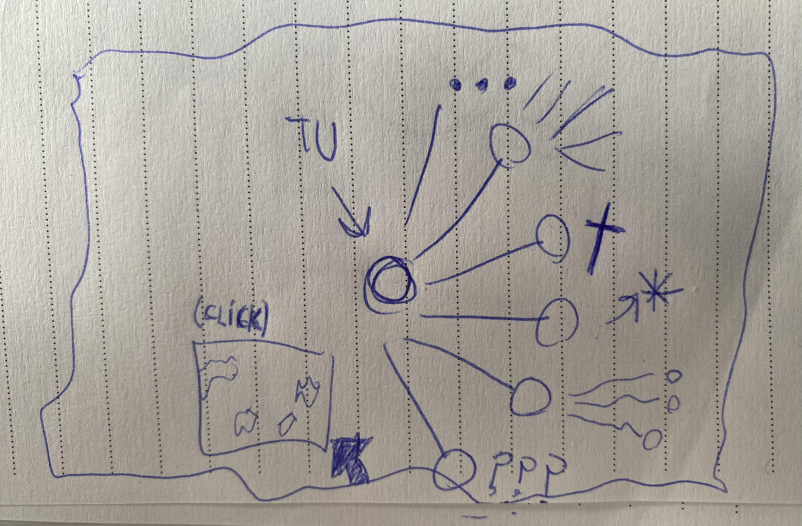

Acta v1.0 - 31/7/2024
Se finalizo con Internet Cave, Se tienen ideas para su *******, fueron retocados algunos errores en la tienda de productos y mas.
> Nivel Facil
> Nivel Medio
> Nivel Dificil
> Nivel Demoniaco
El juego cuenta con una sección de instrucciones.
Hace falta testear.
Se implementara lo antes posible su versión 2.5 con la intención de aportar mas contenido sobre la historia del videojuego.
6-7/8/2024 - Pequeña implementación estética
SoulArchive.com recibió una actualización estética basada en la implementación de iconos en las diferentes pestañas, nueva pantalla de carga para la sección de imagenes generadas y algunos cambios simples.
Futuras Actualizaciones SoulArchive.com
> Generador de personajes
> Nuevos minijuegos
> Mas enlaces redireccionables en el generador de imagenes
> Habitación 3D
> Coleccioanbles fisicos y virtuales
Envía tu idea a X
Internet Cave 2.5 9/8/2024
* Se implemento el primer Track producido por Ak1 y traido a la pagina de forma especial y exclusiva. Debido a ocacionarse ciertos problemas referidos al codigo base del videojuego, se opto por añadir la función de una forma alternativa.
* Se añadio una pieza correspondiente a la historia que desea contar el videojuego.
Mapa de Paginas web 13/8/2024
Se finalizo con la primera versión de la pagina web, tengo la buena noticia para decirme a mi, de que ya estamos mas cerca del comienzo que del principio conceptual, la pagina se comienza a volver fisica y con forma, los pensamientos de esta mente errante toman lugar en el planeta tierra.
Los enlaces se posicionaron sobre la querida pagina que no tiene fin, pronto mas entretenimiento.

SoulsArchive.com 27/8/2024
Se subio por fin la pagina web al servicio de hosting.
El primer dia de publicada la pagina resulto tener varios errores visuales y de compatibilidad, el mismo dia los errores fueron solucionados al anochecer. Aun sigue presentando ciertos problemas de diseño en resoluciones de celular pero pronto se buscaran opciones para solucionar estas fallas.
* se cambio el icono para presentar fallas
* se establecieron nuevos enlaces y se nombraron varias obras en la seccion del documental "Almanatra"
SoulsArchive.com 2.0
Gran actualizacion de errores y adaptabilidad con resoluciones de celular y laptop/notebooks.
*Opción responsive de SoulsArchive.com pagina alterna
*Opción responsive de pagina de metas y donaciones
- Videos que no se vistualizaban hoy por hoy se visualizan.
- Se disminuyo el peso de videos para facilitar su carga.
- Documento de testeo nuevo diseño y se optimizo su codigo.
- Pagina generadora de apariciones de imagenes (Enlace3) se optimizo al maximo (menor uso de cpu y ram).
Internet Tower y SoulsArchive - 22/9/2024
¡Una actualizacion como ninguna otra!
Se añadio el callejon, se arreglaron los segmentos de carga ahora visibles en celular, se implementaron nuevos enlaces, wallpapers y mucho mas!!
Averigualo por ti mismo
Errores Fixeados y más - 15/10/2024
Esto paso mucho antes pero me olvide de hacer la actualización XD, se arreglaron bugs de Internet Tower referidos a las imagenes de armas que no cargaban. Hay pequeños errores de carga en algunas habitaciones si se sube la torre demaciado rapido.
¡Ya pueden comprar el libro! su precio es de $6,99 USD - Comprar
Foros perdidos y mas... - 16/10/2024
Se añadio el Foro perdido, nueva musica y audio.
Se Arreglo bugs de enlaces redireccionables
¡Ya se puede comprar la extensión del almanatra! su precio es de $2,99 USD - Comprar
Acutalizacion de Pagina principal - 27/10/2024
Se cambio completamente el diseño de la pagina principal a una con una estetica clara y repulsiva de WindowsXP. Se puede acceder al antiguo diseño con el boton de "V1"
Es el dia👹 - 29/10/2024
Se lanzo porfin🙏 soulsarchivedrip.com
Se cambiaron fondos en la seccion de "Callejon"
Se actualizaron textos viejos e imagen de metas...
La conferencia de paz - 19/11/2024
La conferencia de paz!!, les dire un secreto y una revelacón, algun dia se dara en persona.